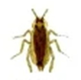
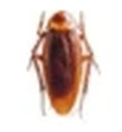
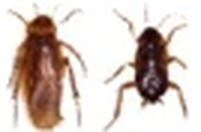
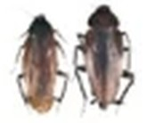

바퀴벌레
| 생김새 | 크기 | 수명 | 습성 | 특징 |
|---|---|---|---|---|
 독일바퀴 | 1.27~1.58cm | 64~251일 | 주방과 화장실등 어둡고 따뜻하며 습기가 많은 0.4cm정도의 틈이면 충분히 살 수 있음 <대표서식지> 씽크대바닥, 음식물조리대, 깨진타일등, 냉장고의 뒷편이나 윗부분,씽크대뒷편,식기건조대,욕실장뒷편,거울뒤편,조명 등 부근에 많이 서식함 | 알을 지니고있는 바퀴벌레는 부화하기 전 하루 전까지 알을 달고 다님 |
 일본바퀴 | 2.8cm | 316~533일 | 습도가 있는 곳에서 많이 발견됨 <대표서식지> 라디에다 주변, 보일러주변, 오븐이나 마루밑, 지하실공간에서 많이 서식하며 독일 바퀴가 발견되는 지역에서도 나타남 | 암놈 바퀴벌레는 안전하고 숨기 쉬운 틈에 알을 낳으며 자기들 배설물 사이에 알을 숨기기도 함 |
 미국바퀴 | 3.8~4.4cm | 320~1071일 | 따뜻하고 습기가 많은 지하실이나 하수관, 정화조,집 수정 등에서 많이 발견되며 실내보다 실외에서 많이 서식하며 종종 실내에서 서식하는 경우도 있음 <대표서식지> 정화조, 맨홀주변,집 수정, 보일러 배관주위, 지하실, 낙엽, 건초 주위 등에서 많이 서식함 | 알이 부화하기 위해 상당한 습도가 필요하며 먹이가 있는 서식지 부근이나 부스러기들 사이틈에 알을 숨겨 놓기도 함 |
 먹바퀴 | 3.8cm | 324~890일 | 미국바퀴벌레와 유사함 | 미국바퀴벌레와 유사함 |
바퀴벌레가 옮길 수 있는 질병
지구상에는 3,500종 이상의 바퀴벌레들이 존재하고 있지만 우리나라에서는 아직까지는 오직 4종만이 서식하는 걸로 알려져 있다.
이 4종은 독일바퀴, 먹바퀴, 집바퀴(일본바퀴), 이질바퀴 등이 있으며 전세계 어디든 존재한다.
- 바퀴벌레는 살모넬라 식중독의 병균을 내포하고 있으며 staphylococcus,streptococcus,coliform과 다른 병원성 박테리아의 은신처 로 발견 되었으며 바퀴벌레의 은신처와 병원균 질병을 옮기는 주요 원인은 바퀴벌레는 인간과 가까운 곳 어디든 살고 있으며 주방의 쓰레기통의 음식물을 포함 어느 것이나 먹는 다는 것이다.
- 오염된 음식을 먹은 후에 질병을 갖고 있는 박테리아는 바퀴의 소화기에서 한 달이나 혹은 더 오래 살아 있다고 한다.
- 다른 사람들이 먹은음식이나 주방기구들은 바퀴벌레들의 배설물에 의해 오염될 수 있으며 살모넬라, 박테리아가 여러해 동안 바퀴벌레의 배설물속에 살아 있었다는 것이 증명되었다.
- 집먼지 알러지가 있는 사람들은 바퀴벌레에 대해 알러지가 있는 경우가 있으며, 집안에 바퀴벌레의 조각난 몸과 분들은 집먼지의 주요 요소가 되며, 어떤 사람들은 거주지에 만연하는 바퀴벌레나 실험을 위해 사육되어지는 과학실험실에서 오랜 기간 동안 바퀴벌레와 함께 있은 후에는 이러한 먼지에 의해 알러지로 발전한다.
- 천식은 바퀴먼지 알러지에 의해 유발될 수 있으며 천식과 알러지의 빈도 는 많은 바퀴벌레와 함께 지속적으로 있었던 사람들에게 더 많이 나타난다는 것이 증명되었다고 한다.
독일바퀴
- 크기: 1.2cm~1.6cm / 수명:64일~251일 / 활동시기: 일년내내 / 서식장소 : 주방주변과 따뜻하고 습기가 많은곳
- 국내에서는 전국적으로 가장 널리 분포하고 있는 바퀴종이다. 음식물을 훔쳐먹고 곳곳에 알을 낳고 배설물을 버려놓아 사람에게 혐오감을 주며 기관지 천식, 비염, 아토피피부염과 같은 알러지를 일으키기도 하는 병원성 해충이다. 음식물을 먹을 때는 토해놓고 부패한 음식을 먹는 등 동물의 배설물 등을 먹으며 더러운 곳에서 활동하여 바이러스,연충, 원충, 곰팡이등 병원체 등을 매게하여 질병을 매게하는 해충이다.
- 가주성 바퀴 중 가장 소형으로 10~15mm 정도이며, 암수모두 밝은 황갈색이고 암컷은 약간 검다. 전흉배판에 두 줄의 검은 줄이 잇다. 약충은 두 줄의 검은 줄이 전흉, 중흉, 후흉 및 복부에 걸쳐 뚜렷하다.
- 주로 밤에 활동을 하며 집안에서는 일년 내내 볼수 있다. 주방주변과 따뜻하고 습기가 많은 곳에 서식하며 30~45개의 알이 든 알집을 부화될 때까지 몸에 달고 다닌다. 약충은 2~3mm이며 건조한곳에서는 약하여 습기가 많은 장소에서 서식을 하며 5번 허물을 벗은 후 약충은 성충이 된다. 성충은 보통 100정도 생존하지만 그 이상 생존하는 경우도 있고 알개는 잘 발달되어 있으나 날지 못하고 민첩한 동작으로 질주한다.
일본바퀴(집바퀴)
- 크기: 2cm~2.8cm / 수명: 316일~533일 / 활동시기: 일년 내내 / 서식장소 : 집안 또는 나무껍질 속
- 일본 토착종으로 최근에 중국과 한국으로 건너간 것으로 알려져 있다. 우리나라에서는 서울,대전 등 중부지방에 널리 분포하고 있는데, 군산과 광주 등 호남지방에서 발견되기도 한다. 특히 저온에 적응한 바퀴로 세계적으로 가장 북방에 서식하는 특이한 종이다.
- 몸 전체가 무광택의 흑갈색이다. 수컷은 약간 가늘고 날개가 복부 끝보다 길게 나 있고, 암컷은 몸이 약간 통통하고 날개가 짧아서 복부의 반만 덮고 있다. 수컷의 경우 먹바퀴와 매우 유사한데 집바퀴가 약간 작고 체색이 무광택이기 때문에 구별할 수 있다. 그리고 전흉배판이 편평하지않고 약간 울퉁불퉁하다.
- 암컷은 3~4개월 살면서 14개 난협을 산출한다. 난협안에는 12~17개의 알이들어있다. 알의 부화기간은 24~35일, 약충은 9회 탈피하는데 약충기간은 평균 6개월 정도로 알려져 있다. 우리나라에서는 아직 야외에서 채집된 예는 없으나 일본에서는 주택부근의 숲속에서 서식하는 반옥외성인 바퀴로 알려져 있다.
미국바퀴(이질바퀴)
- 크기: 3.5cm~4.5cm / 수명:320일~1071일 / 활동시기: 3월10월 / 서식장소: 온도와 습도가 높은 곳
- 국내에서는 목포, 광주, 여수, 부산 등 주로 남부지방에만 분포되어 있었는데 최근에는 서울과 같은 중부지방에서도 자주 채집되고 있다.
- 적갈색 또는 황갈색을 띄며 거주성 바퀴벌레 중 가장 큰 바퀴벌레이며 전흉배판 끝자락에 고리 모양의 황갈색 무늬가 있으며 유충은 적갈색을 띄고 있다. 3령기 부터는 날개가 생기며 성충은 복부 끝까지 날개가 생긴다. 성충의 수명은 365일이며 알주머니가 2열로 배열되어 16개의 알들이 있다. 최적의 온도는 27도씨이며 20도씨 이하에서는 활동이 저하된다.
- 암컷은 난협을 4~10일 간격으로 계속 산출하는데 독일바퀴의 난협과는 달리 껍질이 단단하여 수분증발이 없기 때문에 생성즉시 암컷에서 떨어져 지하실이나, 집수정, 정화조, 하수관 등 따뜻하고 습기가 많은 은신처 틈새에 점착성 물질로 고착시킨다. 일반적으로 날지 않는데 온도와 습도가 높을 때 짧은 거리를 비행 할 수 있다. 성충의 수명은 약1년이고 조건이 불리하면 100일정도 산다.
먹바퀴
- 크기: 3~3.8cm / 수명:324일~890일 / 활동시기: 3월10월 / 서식장소: 온도와 습도가 높은 곳(미국바퀴와 유사함)
- 짙은 밤색이나 검은색을 띄고 있으며 광택이 많이 나며 거주성 바퀴벌레 중 미국바퀴벌레 다음으로 알려져 있다. 전흉배판에 특별한 형상이 없고 매끈하며 성충의 수명이 1년 정도이다.
- 알 주머니는 18~21개의 알이 들어있고 부화기간은 40~60일 정도 되며 유충기간은10~14개월이다. 탈피 과정은 9회~12회 정도 진행된다. 성충은 부화 후 일주일 이내에 교미를 하고 10일 후에 최초 난협을 산출한다. 암컷은 일생을 통해 20여개 내외의 난협을 산출하고 난협은 미국바퀴벌레와 동일하게 만들어지며 서식지부근이나 부스러기 틈에 알을 숨겨놓는다.